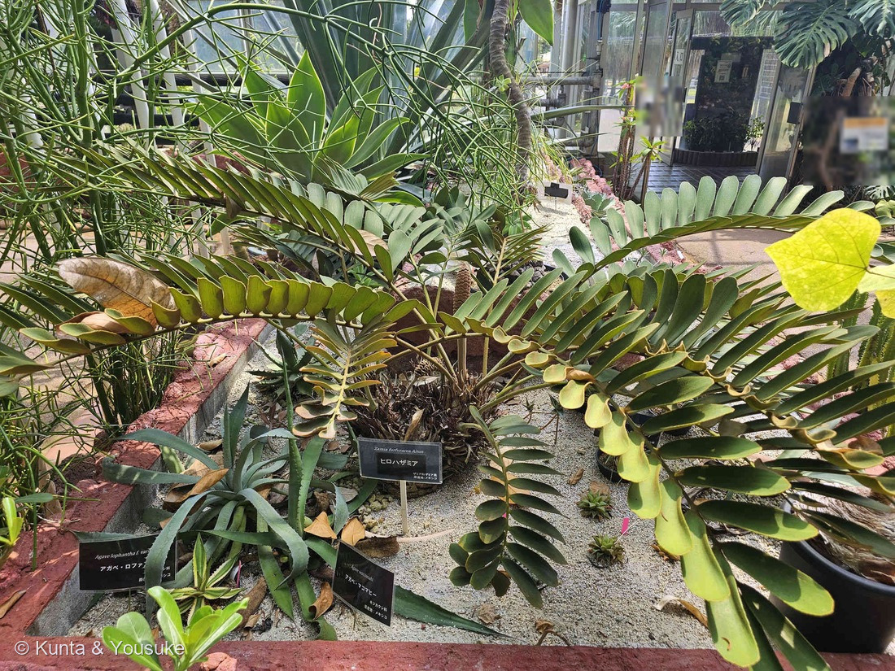
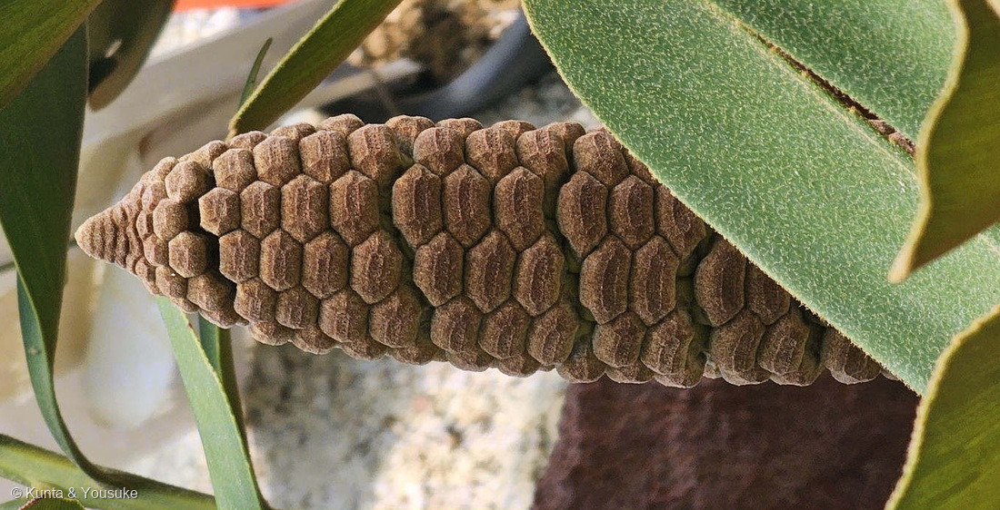
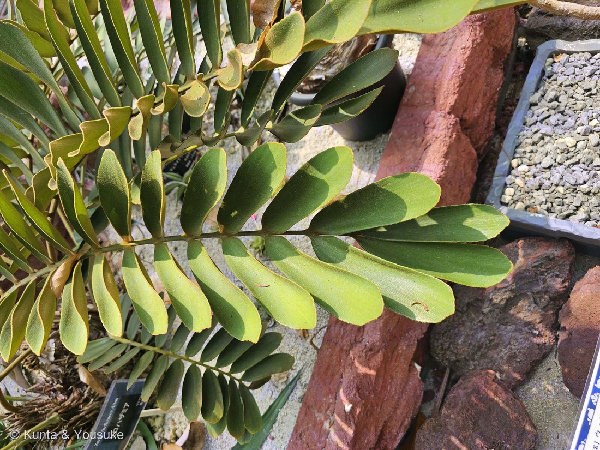

地図を読み込んでいるよ…
🔍 写真も地図も、押しているあいだ拡大して見られるよ（スマホは指を置いてすこし待ってね）。
🌍 の地図＝この子がもともと自生している場所を緑に。メキシコ東部・ベラクルス州南東部の固有種（英語版Wikipedia「endemic to southeastern Veracruz state in eastern Mexico」）。⚠IUCNレッドリストで絶滅危惧（Endangered）。
⚠⚠この緑は「メキシコ全体」ではないよ――英語版Wikipediaは「endemic to southeastern Veracruz state in eastern Mexico」＝メキシコ東部・ベラクルス州の南東部だけの固有種とする。⭐地図は国までしか塗れないので、メキシコ全体が緑になってしまうけれど、実際にいるのはその中のごく狭い一角だけ。⚠⚠そしてIUCNレッドリストでは絶滅危惧（Endangered）――⭐お店や温室ではふつうに見かけるのに、野生では減っているという、218キンシャチと同じ形の子だよ。⭐園の名札の「原産地：メキシコ」も、そういう意味だね。
⚠ 地図は国（日本と中国だけ県・省）までしか塗れないから、ほんとうの分布より広く見えていることがあるよ。地図はだいたいの場所。正確なところは、上の文を見てね。
ヒロハザミア（広葉ザミア）
Zamia furfuracea Aiton
別名 英名 cardboard palm／cardboard cycad（段ボールヤシ・段ボールソテツ）／Mexican cycad 原産 メキシコ東部・ベラクルス州南東部の固有種 ── ⚠IUCN 絶滅危惧（EN）
ザミア科 · Zamiaceae（ザミア属 Zamia・ソテツ目 Cycadales）── ⭐図鑑ではじめてのザミア科＝97科目／⭐⭐⭐そして図鑑ではじめてのソテツ類／⭐5人目の裸子植物・4つめの裸子植物の科
燻太さんの一言「葉はソテツに似て、果実?はモンステラみたい。葉っぱの形だけ見たら、オジギソウにも見えるね。サイズはずっと巨大だけど」── ⭐⭐三つとも、大事なところを突いていたよ
⚠⚠⚠ さいしょに ── この子は、全体に毒をもっています
⚠⚠ 見た目はおだやかな観葉植物だけれど、ザミアは全身が有毒だよ。
- 英語版Wikipedia＝「All parts of the plant contain Cycasin and an unknown nervous system toxin which are poisonous to animals, including humans」。⚠種子は「liver and kidney failure, as well as eventual paralysis in humans」を起こす、とも書かれている。
- ⚠⚠同じソテツ類のソテツも同じ＝「ソテツは、有毒な配糖体であるサイカシンやネオサイカシン、マクロザミン、および神経毒となるβ-Nメチルアミノ-L-アラニン（BMAA）を全体に含む」（日本語版Wikipedia・ソテツ）。⚠⚠⚠そして、毒抜きに失敗して死者を出した歴史がある＝「ソテツ食中毒で死者を出すほどの悲惨な状況にまで陥り、これを指して『ソテツ地獄』と呼ばれるようになった」（同）。
- ⭐⭐⭐⭐そして、220 トウゴマのときと同じ、いちばん大事な一項＝⚠⚠この子は、危なそうに見えない。——つやのある濃い緑の葉で、観葉植物として売られ、温室や玄関先にふつうに置かれている。⭐英名は「cardboard palm（段ボールヤシ）」で、名前もかわいい。⚠「毒のあるものは毒々しく見える」とはかぎらないんだ。
- ⭐だから、ぼくらのすることは見るだけ。⚠実も葉も口に入れない。園の株には触らない。⚠書かないこと＝毒のあつかい方や、食べ方のたぐい（061 キョウチクトウ・220 トウゴマと同じ姿勢だよ）。
⭐⭐⭐⭐⭐ 燻太さんの見立てに、ぜんぶ答えるよ
⭐⭐ 燻太さんは、いっぺんに三つの見立てをくれた。⭐ひとつずつ答えるね（218 キンシャチのときと同じやり方）。
⭐ ① 「葉はソテツに似て」──似ているどころか、同じ「ソテツ類」
- ⭐⭐この子はソテツ目（Cycadales）のなかま。⭐ソテツとは同じ目のいとこだよ。
- ⚠ただし科はちがう＝ソテツはソテツ科（ソテツ属）、この子はザミア科（ザミア属）。⭐⭐ソテツ類には大きく二つの科があって、この子は「もう一方の側」なんだ。
- ⭐⭐⭐そして、これが図鑑にとって大きい＝ソテツ類は、この子がはじめて。⭐裸子植物としては179 カイヅカイブキ・187 イチョウ・188 ラクウショウ・231 イヌマキにつづく5人目だけれど、「ソテツ」という大きな枝は空いたままだった。
⚠⚠ ② 「果実?はモンステラみたい」──あれは果実じゃないんだ
- ⚠⚠⚠この子は裸子植物。——⭐裸子植物には、そもそも果実というものが無い。⭐子房が無くて、胚珠がむき出しについているから、それを包む果実ができないんだ。
- ⭐⭐⭐写真②のあれは球果（きゅうか）——マツやスギの「まつぼっくり」と同じ器官だよ。⭐六角形の鱗片が、らせんにびっしりならんでいるでしょう。⭐あの一枚いちまいが胞子葉で、そのうらに花粉ぶくろ（雄）か胚珠（雌）がついている。
- ⭐⭐「モンステラみたい」という見立ては、形としては大当たりだよ。——モンステラの実も、六角形のかけらがびっしりならんだ棒だからね。⚠でも中身はまるでちがう＝モンステラ（サトイモ科・被子植物）のあれはほんとうの果実の集まり、こちらは果実ですらない球果。⭐だから🎭の小道に入れたよ。
- ⚠ぼくには、この球果が雄か雌か決めきれなかった。⭐1個だけ太い柄で直立していて、長さは太さの3倍ほど——雌球花らしく見える。⚠でも決め手は「熟して鱗片が離れ、赤い種子が見えるか」だから、いまは言えない。⏳宿題にしたよ。
⭐⭐⭐ ③ 「葉っぱの形だけ見たらオジギソウにも見える」──いちばん遠い他人の空似
- ⭐⭐⭐⭐これが、この回でいちばんすごい見立てだった。——009 オジギソウはマメ科の被子植物、この子はザミア科の裸子植物。⭐種子をつくる仲間の中で、いちばん大きな分かれ目の両側にいる。
- ⭐図鑑の「どれくらい遠いか」のものさしでいうと、230 デンジソウの「種子をつくる／つくらない」のひとつ内側、219 ハツミドリの「単子葉 vs 双子葉」よりずっと外側だよ。
- ⭐⭐⭐では、なぜ似ているのか。——⭐どちらも「1本の軸に、小さな葉を左右にずらりとならべる」という形（1回羽状複葉）にたどりついたから。⭐大きな葉を一枚で作るより、風を逃がし、光を分けて受けられる形なんだと思う（⚠この理由を書いた出典には当たれていない＝ぼくの読み）。
- ⭐燻太さんの言うとおり、サイズはまるでちがう＝この子の葉は長さ50〜150cmで、小葉は1枚が8〜20cm×3〜5cmもある（英語版Wikipedia）。⭐オジギソウの羽片は数mmだから、けたが二つちがうね。
- ⭐⭐だから🧬 収れん ── 他人の空似 の小道に入れた。
⭐⭐⭐⭐⭐ 1896年、この属で確かめられたこと
⭐⭐⭐ ここが、この回のいちばんの話だよ。⭐187 イチョウのページに書いたことの、つづきなんだ。
- ⭐イチョウのページには、こう書いた＝「種子でふえる木なのに、受粉したあと、鞭毛を回して泳ぐ精子が出てくる（1896年・平瀬作五郎）」。
- ⭐⭐日本植物学会は、その日付まで書いている＝「1896年9月9日に、運動するイチョウ精子が平瀬作五郎により観察された」。
- ⭐⭐⭐そして同じ年、もう一人が、ソテツで同じものを見つけた＝「1896年に、池野成一郎はそれ以前からソテツに注目して鹿児島へ赴き研究を行っていたが、同じく1896年に、固定して東京へ持ち帰った試料から、ソテツの精子を発見した」（日本語版Wikipedia・ソテツ）。⭐その報せが世に出たのが1897年（日本植物学会「1897年に池野のソテツ精子発見の報が載り」）。
- ⭐⭐⭐⭐⭐さらに、その次の一手が、この子の属だった。——日本植物学会は、こう続ける＝「1897年になってアメリカにおいて、ウェッバーがザミアで精子を確認」。
- ⭐⭐⭐⭐つまり ──イチョウ（1896）→ ソテツ（1896）→ ザミア（1897）。⭐たった2年のあいだに、「裸子植物にも泳ぐ精子がいる」ことが、この三つのグループでつぎつぎ確かめられた。⭐⭐そして目の前のこの子は、その三番目の主役の属なんだ。
- ⭐⭐平瀬と池野は、1912年に二人そろって帝国学士院恩賜賞を受けている。⭐日本の植物学が、世界に出ていった瞬間だったんだね。
- ⚠もちろん、目の前の球果を割っても精子は見えないよ——⭐精子ができるのは受粉のあと、胚珠の中でだから。⭐でも「この属で確かめられた」と思って見ると、ただの茶色いかたまりが、ちがって見えてくる。
この植物のこと ── 97科目、そして「生きている化石」
- ⭐⭐⭐図鑑ではじめてのザミア科＝97科目。⭐⭐そしてはじめてのソテツ類で、⭐5人目の裸子植物・4つめの裸子植物の科だよ。
- ⭐⭐ソテツ類は「中生代から形態的にあまり変わっていないため、『生きている化石』ともよばれる」（日本語版Wikipedia・ソテツ）。⭐恐竜のいたころの姿を、そのまま持っている仲間なんだ。
- 葉は「50–150 cm long」で、葉柄が15〜30cm、小葉は「6-12 pairs of extremely stiff, pubescent (fuzzy) green leaflets」、1枚が「8–20 cm long and 3–5 cm wide」（英語版Wikipedia）。⭐写真③でさわり心地が想像できるね ── かたくて、細かい毛でざらざらしている。
- ⭐雌雄異株（英語版Wikipedia「dioecious」）＝雌株には卵形の球果、雄株にはもっと細い球果が束になる。⭐だからこの株は、雄か雌かどちらかだよ。
- ⚠⚠IUCNレッドリストで絶滅危惧（Endangered）（英語版Wikipedia）。⭐メキシコ・ベラクルス州南東部だけの固有種。⭐図鑑では218 キンシャチと同じ形だね——お店や温室ではふつうに見るのに、野生では減っている子。
⭐⭐⭐ 花粉を運ぶのは、ゾウムシ
- ⭐⭐ソテツ類は風で花粉を飛ばす、と思われがちだけれど、この子はちがう。——英語版Wikipedia＝「Pollination is done by certain insects, namely the cycad weevil Rhopalotria mollis」。
- ⭐つまりゾウムシが、雄の球果から雌の球果へ花粉を運ぶ。⭐⭐「裸子植物＝風まかせ」ではないんだね。
- ⭐⭐図鑑の中でつながる話＝187 イチョウも231 イヌマキも風や鳥にたよる子だったけれど、⭐この子は虫と手をつないでいる。⚠しかもかなり特定のゾウムシで、⭐その虫がいないと種ができにくいらしい（⚠この「らしい」の部分は出典に当たれていない＝ぼくの読み）。
⭐⭐ 名前のこと
- ⭐属名 Zamia はラテン語の zamia（松の実）から（英語版Wikipedia）。⭐球果をつける仲間だから。
- ⭐⭐種小名 furfuracea は「mealy（粉をふいた）」「scurfy（ふすま状の・鱗くずの）」（同）＝⭐若い葉や葉柄が、細かい鱗のような毛におおわれることから。⭐写真③の、あのざらざらした手ざわりが名前になっている。
- ⭐和名の「ヒロハ（広葉）」は、ザミア属の中で小葉が幅広いから（⚠そう書いた出典には当たれていない＝ぼくの読み）。⭐たしかに、ソテツの細い小葉とくらべると、ずいぶん幅がある。
- ⭐⭐英名がおもしろい＝「cardboard palm（段ボールヤシ）」「cardboard cycad」（英語版Wikipedia）。⭐葉がかたくて厚くて、まるで段ボールを切って貼ったみたい、ということ。⚠でもヤシではないよ——⭐192 ワシントンヤシのヤシ科は被子植物の単子葉類で、この子とは大きく離れている。⭐「◯◯パーム」という英名は、あてにならないんだ。
- ⭐⭐命名者の Aiton はウィリアム・エイトン（1731–1793）＝「1759年に新設されたキュー・ガーデンの園長に任命され、その死まで職を務めた」／1789年に『Hortus Kewensis』を出版（日本語版Wikipedia）。⭐⭐236 ネオレゲリアのレーゲル（サンクトペテルブルク植物園長）に続いて、植物園の園長さんが二人つづいたね。⭐キューとサンクトペテルブルク ── 世界の植物園が、図鑑の中でならんだよ。
同定について
- ⭐園の名札に「Zamia furfuracea Aiton／ヒロハザミア／ザミア科ザミア属／原産地：メキシコ」とあった＝学名・命名者までついた名札。⚠名札のアップそのものは公開していないよ（200のルール）。
- ⭐形のうえでも決まる＝1回羽状複葉／小葉が幅広く（3〜5cm）、厚くてかたい／小葉にも葉軸にも短い毛が密生／小葉の先のほうにまばらな鋸歯／株の中心から球果が立つ。
- ⚠ソテツ（Cycas revoluta）とのちがいは、小葉の幅ではっきりする＝ソテツの小葉は「線形」で60〜150対もつく（日本語版Wikipedia）。⭐この子は6〜12対で、1枚が幅3〜5cm。⭐⭐数がずっと少なくて、一枚がずっと大きい。
- ⚠⚠球果の雄雌は決めきれなかった（上の節に書いたとおり）。⏳秋以降にもう一度見て、赤い種子が出るかどうか。
⭐⭐ 会えた場所 ── 森きららの温室
- ⭐長崎旅行の三日目、九十九島動植物園 森きらら（長崎県佐世保市）の温室で会った。⭐234 カクレミノ・235 イヌタヌキモ・236 ネオレゲリアに続いて、この園から4人目だよ。
- ⭐写真①を見ると、砂と溶岩石のあいだに植えられていて、まわりはアガベのなかま（名札に「アガベ・ロファンサ」「アガベ・マコマヒー」と読める）。⭐どちらも原産地はメキシコ＝⭐⭐メキシコの乾いた土地の子を集めた一角なんだね。
- ⭐うしろにはモンステラと、温室の入口のガラス。⭐朝の光がななめに入っていて、葉のふちが金色に光っている。
参考：Wikipedia (English)・Zamia furfuracea（cardboard palm, cardboard cycad, cardboard plant, cardboard sago, Jamaican sago, Mexican cycad／the name derives from Latin zamia (pine nut) and furfuracea, which means "mealy" or "scurfy"／endemic to southeastern Veracruz state in eastern Mexico／leaves 50–150 cm long, petiole 15–30 cm long, and 6-12 pairs of extremely stiff, pubescent (fuzzy) green leaflets／leaflets 8–20 cm long and 3–5 cm wide／dioecious／Pollination is done by certain insects, namely the cycad weevil Rhopalotria mollis／All parts of the plant contain Cycasin and an unknown nervous system toxin which are poisonous to animals, including humans／liver and kidney failure, as well as eventual paralysis in humans／Endangered (IUCN 3.1)）／Wikipedia・ソテツ（ソテツ科、ソテツ属に属する常緑樹の1種である／九州南部から南西諸島、台湾、中国南部（福建省）に分布する／雌雄異株であり、雄株は細長い円柱状の小胞子嚢穂（"雄花"）を、雌株は大胞子葉が密生したドーム状の構造（"雌花"）を／1896年に、池野成一郎はそれ以前からソテツに注目して鹿児島へ赴き研究を行っていたが、同じく1896年に、固定して東京へ持ち帰った試料から、ソテツの精子を発見した／ソテツは、有毒な配糖体であるサイカシンやネオサイカシン、マクロザミン、および神経毒となるβ-Nメチルアミノ-L-アラニン（BMAA）を全体に含む／ソテツ食中毒で死者を出すほどの悲惨な状況にまで陥り、これを指して「ソテツ地獄」と呼ばれるようになった／葉は長さ 70–200 cm、幅 20–30 cm、1回羽状複葉であり、葉軸に線形の小葉が多数（60–150対）互生／ソテツ類は、中生代から形態的にあまり変わっていないため、「生きている化石」ともよばれる）／日本植物学会「池野成一郎のソテツ精子発見」（1896年9月9日に、運動するイチョウ精子が平瀬作五郎により観察された／1897年に池野のソテツ精子発見の報が載り／1897年になってアメリカにおいて、ウェッバーがザミアで精子を確認／最初の短報は日本語で『植物学雑誌』へ発表／"Annals of Botany"へは、平瀬・池野の両名で英文の論文を発表／1912年に帝国学士院恩賜賞を受賞）／Wikipedia・池野成一郎（日本の植物形態学の先駆者平瀬作五郎のイチョウの精子の発見に続いてソテツの精子を発見した／東京帝国大学名誉教授）／Wikipedia・ウィリアム・エイトン（William Aiton, 1731年 - 1793年2月2日／1759年に新設されたキュー・ガーデンの園長に任命され、その死まで職を務めた／1789年に著書『Hortus Kewensis』を出版している／Aitonは、植物の学名で命名者を示す場合にウィリアム・エイトンを示すのに使われる）